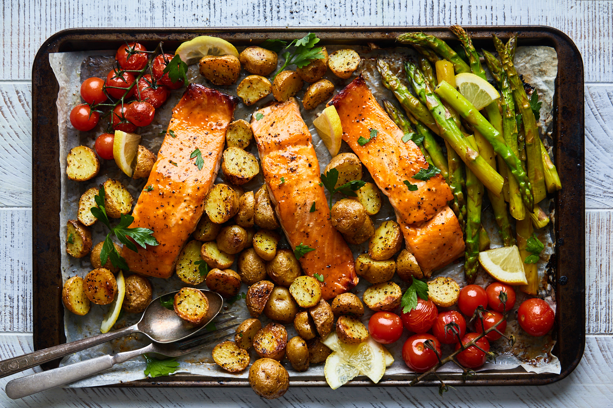

Maple Salmon

This is a simple weeknight me my partner an I love, it tastes so good and gives us both the ability to enjoy a great meal
without having to dirty a ton of dishes and slave away hours in the kitchen. And now we want to share it with you!
This meal is great because it's highly customizable, this article will be using roasted potatoes and asparagus for
the vegatables, but not only can you customize the seasoning on these two components you can swap them entirely for your
favorite veg!
Ingredients
- Salmon
- Asparagus
- 2 Big Lemons
- Parmesan
- Olive Oil
- 1/4 Cup Sesame Seeds
- 1/4 Cup Pure Maple Syrup
- 2-3 Cloves of Minced Garlic
- 2 Tablespoons of Soy Sauce
- 2 Tablespoons of Sesame oil
- Baby Potatoes
- Optional: Chopped Green Onion
Steps
- In a bowl mix the maple syrup, soy sauce, sesame oil and garlic. Whisk to combine
- Pour this mixture into a bag with the salmon and let it marinate for 2-8 hours
- Preheat the oven to 375 farenheit
- Once the oven has hit 375 place a sheet pan in for 20 minutes
- While the pan heads up cut your baby potatoes in half and place them into a mixing bowl. Add salt pepper and olive
oil into the bowl and toss to combine.
- After the pan has heated place the potatoes cut side down and let them cool for 25 minutes
- Wash your asparagus then cut off the steams and place into a mixing bowl with salt, pepper, olive oil and
a sqeeze of lemon juice "Half of one lemon"
- Take the salmon out of the bag and pour the marinade into a small saucepan on low heat we will reduce
the sauce into a glaze for the salmon after it cooks
- Cut the remaining lemons into thin slices, these will be put on top of the asparagus before it goes into the oven
Once the potatoes have cooked take the sheet tray out and add the asparagus and salmon onto the pan and place
back inot the oven for another 20 minutes, or until the salmon hits 165F internally
- Once everything has finished cooking remove the lemon slices from the asparagus sprinkle parmesan cheese on top
- Plate and serve!
Hungry For More?